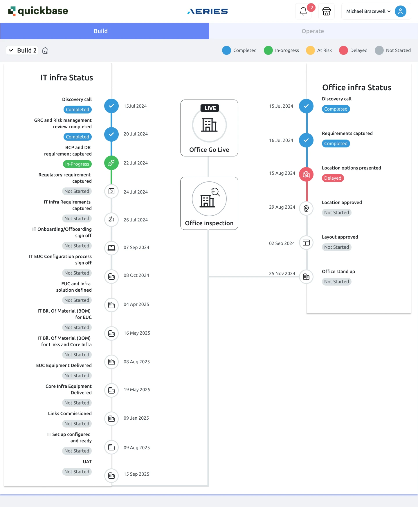
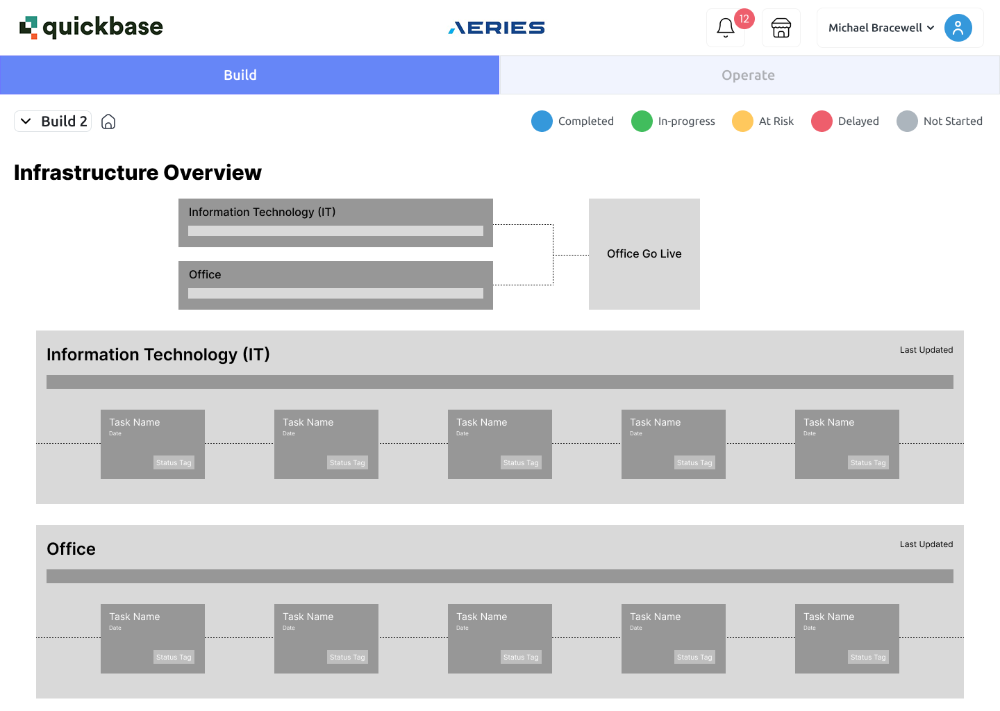
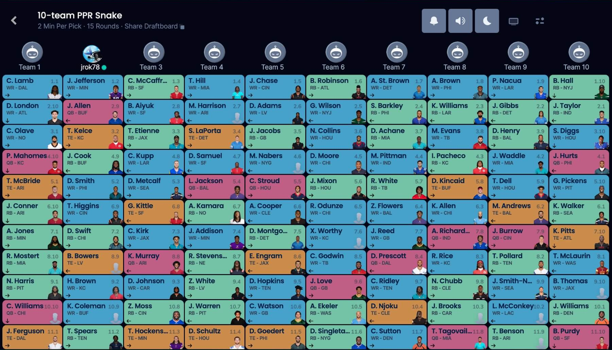
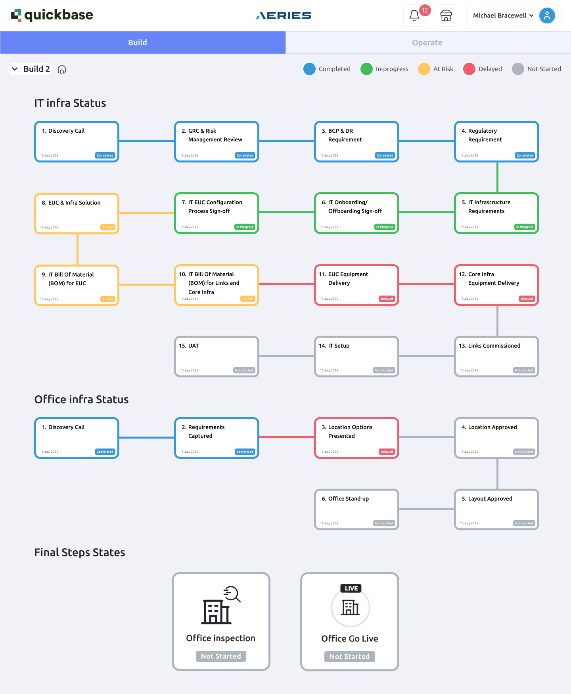
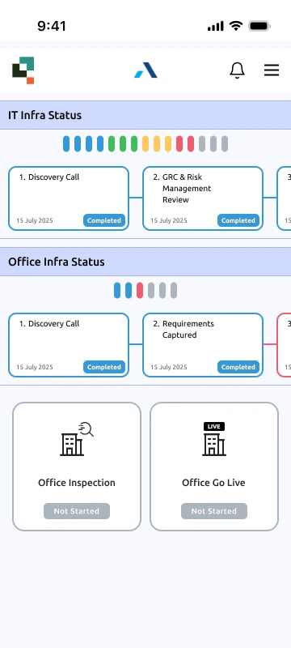

Untangling a serpentine timeline
Redesigning an infrastructure milestone dashboard for Aeries Technologies as the only designer in the room.
Inside real engineering and stakeholder constraints: buildable by the existing dev team, and everything visible on one screen.

The short version
Aeries Technologies used a Quickbase-based internal dashboard to track IT and office infrastructure milestones for client site launches. The original layout forced a serpentine reading path: down one column, across, then back up another. I redesigned it as a left-to-right milestone grid inspired by an unexpected source, a fantasy football draft board, then refined it through direct developer and stakeholder feedback. The redesign stayed within the constraints that mattered: buildable by the existing dev team, and everything visible on one screen.
Everything design: audit, wireframes, market research, high-fidelity redesign, mobile layout, and two rounds of stakeholder and developer review.
- Redesigned desktop dashboard
- Responsive mobile layout
- High-fidelity Figma files for developer handoff
Sole designer. Real developers. Real constraints. The design that survived them is the one worth showing.
Where are we, and what is at risk?
What the dashboard did. When Aeries stood up a new client site, two workstreams ran in parallel: IT infrastructure (fifteen milestones, from discovery call to UAT) and office infrastructure (six milestones, from discovery to office stand-up). Internal teams and stakeholders used the dashboard to answer one question quickly: where are we, and what is at risk?
What was wrong. The original screen answered that question badly.

- A serpentine reading path. The IT timeline ran down the left rail, the office timeline ran down the right, and two summary cards floated in the middle with ambiguous connector lines. The eye traveled down, across, and back up with no natural start or end.
- Status you had to hunt for. Progress lived in small pills scattered along both rails. There was no way to see at a glance how far along either workstream was.
- Desktop only. The layout had no responsive behavior, so checking progress meant being at a desk.
The constraints that shaped everything. This was not a blank canvas. Three limits defined the work, and they came from people, not a rubric:
- 1The existing Quickbase system. The redesign had to live inside the platform the tool was already built on.
- 2Developer feasibility. The dev team reviewed my early concepts directly and told me plainly what they could and could not build without disproportionate effort.
- 3One screen, no navigation. Stakeholders wanted the full picture without clicking through to secondary pages. Progressive disclosure by navigation was off the table.
I was the only designer. No design team to workshop with, no design system to lean on. Every review was with developers, PMs, and stakeholders, which meant every design argument had to be made in their terms: buildability, visibility, and speed to answer.
From serpentine to draft board
Start cheap on purpose. My first move was a deliberately low-fidelity grayscale wireframe. The goal was to get a structural reaction from stakeholders before investing in polish. The wireframe made the two big bets early: rotate the timelines from vertical to horizontal, and add per-section progress bars for at-a-glance status.
The feedback that redirected me. The lo-fi worked exactly as intended: it surfaced the real constraints cheaply. Developers flagged that parts of the concept would be hard to build. Stakeholders added the requirement that everything stay on one screen with no navigation. That feedback killed some directions and sharpened the brief into something precise: a long sequential process, fully visible on one page, built from components the team could actually ship.
The lo-fi wireframe cost me a few hours and saved me weeks. Its job was to be argued with.
An unexpected reference. I went looking for interfaces that already solved this exact problem and found one far from enterprise software: the Sleeper fantasy football draft board. A snake draft displays 150 sequential picks on one screen, color-coded, scannable in seconds, built from one repeating card component. It was the closest thing I found to a proven pattern for the brief, so I adapted it.



First high-fidelity pass. The first redesign translated the draft board directly: milestone cards in a grid, color-carrying borders for status, one repeating component. But it also inherited the draft board's snake reading order, where alternating rows run right to left.
Let the users pick the reading order. Rather than assume, I built both options as full frames and brought them back to stakeholders and developers side by side: the snake order, or a strict left-to-right wrap in every row. They preferred strict left-to-right, and that is what went into the final design. It reads like text: every row starts at the left margin.
The final pass added glanceability and control
- Strict left-to-right rows. Milestones 1 to 4, then 5 to 8, then 9 to 12, then 13 to 15. No reversals.
- Per-section progress bars. Each workstream got a summary bar showing the percentage of milestones in each state, so the "where are we?" question is answered before reading a single card.
- Collapsible sections. Users decide whether they want the summary or the details. Collapsing a section keeps the one-screen promise even as milestone counts grow.
- Status carried by the card, not hidden beside it. Colored borders and pills make state legible at grid-scan distance.
- Final steps grouped and labeled. The two culminating milestones, office inspection and go-live, moved from floating mid-canvas into their own titled group at the end of the sequence.
And a mobile layout
The one-screen mandate applied to desktop, but the status-checking use case does not wait for a desk. I designed a responsive mobile layout that preserves the progress bars and card grammar in a single column, so milestone progress is glanceable from a phone.

Where it landed, honestly
Where it landed. The redesign was approved by stakeholders and validated as buildable by the development team. It stayed at the design stage: I left Aeries before implementation began. That is a normal industry sentence and I am comfortable writing it.
No metrics exist for a design that was not built, so I will not invent any. What the before and after demonstrate on their own: a clear reading order where there was none, workstream progress visible in one glance instead of a hunt, and a responsive layout where the original had no mobile presence at all.
What this project taught me
The two hardest requirements, developer feasibility and one-screen visibility, are what pushed me toward a stronger, simpler pattern than I would have designed unconstrained.
The grayscale wireframe was the highest-leverage deliverable in the project. It extracted the constraints that mattered before fidelity made changing course costly.
The best precedent for a one-screen sequential status board was a fantasy sports product, not an enterprise tool. I have gone looking sideways ever since.
The snake-versus-wrap decision was settled by showing stakeholders and developers both options, not by arguing from theory. That habit, options rendered rather than described, has followed me into every project since.
Designing alone with real developers taught me the discipline that academic teamwork could not: every decision has a cost, and someone in the room knows exactly what it is.